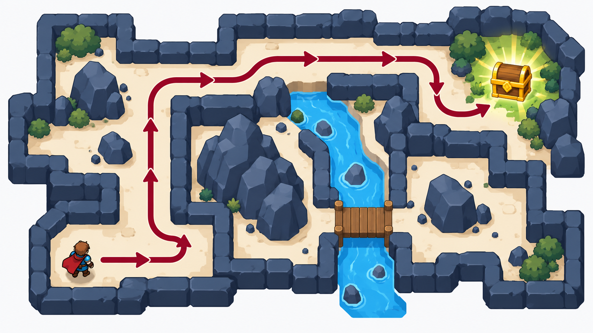

按层数，FIFO
按 ___ 顺序选节点01 · 封面与回顾
有信息搜索
（启发式搜索）
上节课回顾：三种盲目搜索——BFS（按层数，FIFO）、DFS（一路到底，LIFO）、UCS（按 g(n) 已付代价从小到大）。它们的共同点：知道目标是什么，但没有估计当前节点离目标还有多远的方向信息。
一路到底，LIFO
按 ___ 顺序选节点按 g(n) 已付代价从小到大
按 ___ 顺序选节点02 · 启发式函数
什么是启发式函数 h(n)
- 在搜索问题中，每个节点 n 代表一个状态。启发式函数 h(n) 是一个猜测值：估计从当前节点到目标还需多少代价。
- 如果 h(n₁) < h(n₂)，我们猜测从 n₁ 到目标的花费更低。
- 到了目标本身：h(n_goal) = 0。
- 算法用 h(n) 决定优先扩展哪些节点，减少无谓的搜索。假设你在地图上找路：启发式函数 h(n) 表示从当前城市到北京的直线距离。
03 · 应用
启发式搜索的典型应用
地图导航 / 出行规划：Google Maps、高德地图、Uber 等路径规划
机器人路径规划：机器人和无人机在二维/三维环境中寻找最短路径

游戏 AI：NPC 路径规划（角色自动走到目标点）
自然语言处理 / 机器翻译：选择最有希望的句子候选
04 · 贪心最好优先搜索
贪心最好优先搜索 GBFS
- 使用启发式函数 h(n)，估计从当前节点 n 到目标的剩余代价。
- 每次扩展时，从候选节点中选择 h(n) 最小的那个（也就是看起来离目标最近的）。贪心只考虑当下“最优”的结果。
- 重复直到找到目标。
- GBFS 的评价函数为 f(n)=h(n)；它只关心 h(n)，不关心 g(n)。
- 例子：从 Arad 到 Bucharest，h ＝到 Bucharest 的直线距离。
05 · 贪心搜索的属性
贪心搜索的属性
1. 完备性（Completeness）
不保证完备
因为贪心搜索可能会掉进死胡同：它总是选择看起来离目标最近的节点，但如果路径被障碍物挡住，它可能在一个区域来回徘徊，无法找到解。
在有限状态空间＋检查重复状态的情况下，可以保证完备；否则不一定。
2. 最优性（Optimality）
不保证最优解
原因：它只依赖启发式函数 h(n)（估计剩余代价），而不考虑从起点到当前节点的真实代价 g(n)。
所以它可能走了一条“看起来近，但总成本更大”的路线。
查看时间与空间复杂度
3. 时间复杂度（Time Complexity）：最坏情况下，仍然可能需要扩展指数级的节点：O(bm)，其中 b 为分支因子，m 为最大深度。实际效率取决于启发式函数的质量。如果 h(n) 很好（接近真实代价），贪心搜索会比盲目搜索（BFS/DFS）快得多。
4. 空间复杂度（Space Complexity）：和 UCS 类似，需要维护一个优先队列（按照 h(n) 排序）。空间复杂度与时间复杂度同量级：O(bm)。
06 · A* 算法
A* 算法：把两个代价加起来
一致代价搜索：按向后代价 g(n)（已走多远）排序。
贪心搜索：按前向代价 h(n)（猜还有多远）排序。
A* 把两者相加：f(n) = g(n) + h(n)——既看已走多远，又猜还有多远。
A* 每次选 f(n) 最小的节点扩展。
一致代价搜索
按向后代价 g(n)
已走多远贪心搜索
按前向代价 h(n)
猜还有多远A*
f(n) = g(n) + h(n)
既看已走多远，又猜还有多远07 · A* 走一遍
A* 走一遍（罗马尼亚地图）
08 · A* 伪代码
A* 伪代码（填空小游戏）
- 将起点加入边缘，f=g+h，g=0
- 重复直到边缘为空：
a. 取出 f(n) 最小的节点 n
b. 若 n 是目标 → 返回路径
c. 否则对每个后继算 f=g+h，放回边缘 - 边缘为空还没到目标 → 无解
查看完整伪代码
- 将起点加入开放列表 OPEN，f(s)=g(s)+h(s)，g(s)=0。
- 重复以下步骤直到 OPEN 为空：
- 从 OPEN 中取出 f(n) 最小的节点 n。
- 若 n 为目标节点，则路径找到。
- 否则，对 n 的每个后继 n′：若 n′ 不在 OPEN 或新路径更优，更新 g(n′)=g(n)+c(n,n′)、f(n′)=g(n′)+h(n′)，并记录父节点 predecessor(n′)=n。
- 若 OPEN 为空但未到目标 → 无解。
每次从边缘拿出 f(n) 最 ___ 的节点（大 / 小）
是目标就 ___ 这条路（返回 / 继续扩展）
不是目标就算后继的 f=g+h，放进 ___（边缘 / 回收站）
09 · 路径松弛
同一节点走两次：路径松弛
- 同一状态 C 可能从两条岔路到达。
- 路径松弛：发现更便宜的路径到达同一状态时，按更低代价更新边缘里的记录。
- 例：经 B 到 C，g(C)=2、h(C)=8，f(C)=8+2=10；后来经 A 到 C，g(C)=1.5、h(C) 仍为 8，f(C)=8+1.5=9.5——更新为 9.5。
10 · A* 的最优性
A* 凭什么最优：h 不能高估
- A* 最优的秘密：h 是可采纳的（admissible）——h(n) 永远 ≤ 从 n 到目标的真实代价，永不高估。
- 只要启发函数可采纳，A* 在找到真正的最优目标 G 之前，不会“错误地”结束搜索并确定次优目标 G₂。
- 反例：从 A 到目标 G 的真实剩余代价只有 1，若却估成 h(A)=6，A* 可能错过总成本为 2 的最优路径。
11 · A* 的性质
A* 的性质
- 完备：在本课有限、正代价的地图中，存在解就能找到。
- 最优：树搜索要求 h 可采纳；图搜索还要求 h 一致，或正确更新并重新打开更便宜的重复状态。
- 缺点：所有待扩展节点都存内存，地图一大内存吃不消（工程上有 IDA*、MA* 等变体）。
- 退化关系：h=0 时，f=g，A* 退化为一致代价搜索 UCS；这不表示 A* 在所有问题上都比 UCS 更快。
查看复杂度与理想启发函数
时间复杂度：最坏情况下，A* 仍可能扩展指数级节点：O(bd)，其中 b 为分支因子，d 为解的深度。
启发质量：h(n)=0 时，A* 退化为 UCS；若 h(n)=h*(n)，A* 只扩展最优路径上的节点（理想情况）。
空间复杂度：空间复杂度为 O(bd)；OPEN 表和 CLOSED 表需要存储所有生成的节点。
12 · f-等高线
f-等高线
- 在本例使用的一致直线距离启发函数下，A* 按 f 值递增的顺序扩展节点。
- 把 f 不超过同一阈值的节点圈起来作示意：f≤380、f≤400、f≤420。最优路径到 Bucharest 的 f=418，落在第三圈内。
13 · 总结
总结
贪心 GBFS
扩展最小 h —— 完备性有条件，不保证最优。
A*
扩展最小 g+h —— 在相应条件下完备、最优。
- 启发函数 h：估计到目标的代价。
- 好的 h 可能显著减少计算量；也可以用学习方法为搜索提供引导信息。
- 思考：两种启发式算法分别是什么？各自的完备性和最优性？
14 · 小结与复习
小结与复习
- 启发函数 h(n)：从 n 到目标的估计代价，是猜测；h(目标)=0。
- 贪心 GBFS：每次扩展 h 最小的节点。有限状态空间且检查重复状态时可保证完备；不保证最优（罗马尼亚例：找到 450，非最优 418）。
- A*：f(n)=g(n)+h(n)，每次扩展 f 最小。g 管已走代价，h 管剩余估计。
- 可采纳性：h(n) ≤ 真实剩余代价，不高估。树搜索以此保证最优；图搜索还需 h 一致，或正确更新并重新打开节点。
- 路径松弛：同一状态发现更便宜路径时，更新边缘里的 g/f。
- f-等高线：A* 优先扩展 f 小的节点；等高线示意的是递增的 f 阈值，不是实际地图上的同心圆。
- 退化关系：h=0 时 A* 退化为 UCS。
- 前沿：AlphaZero、Neural A*、Tree of Thoughts 都结合了学习与搜索，但并非都学习同一种 h(n)。
15 · 课堂自测